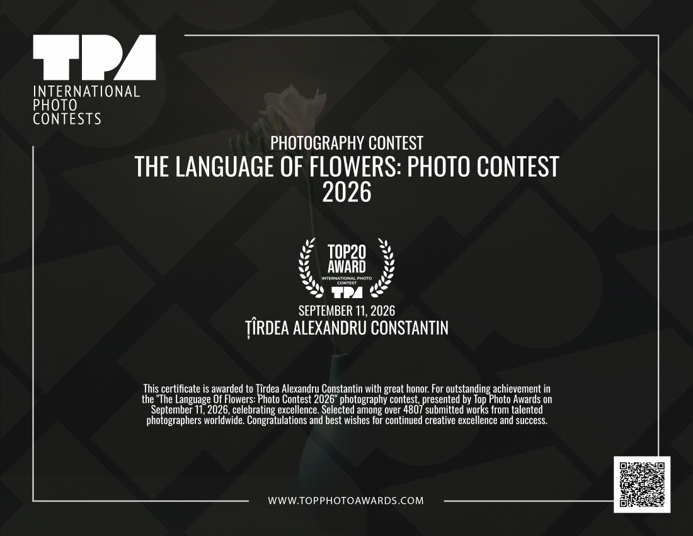
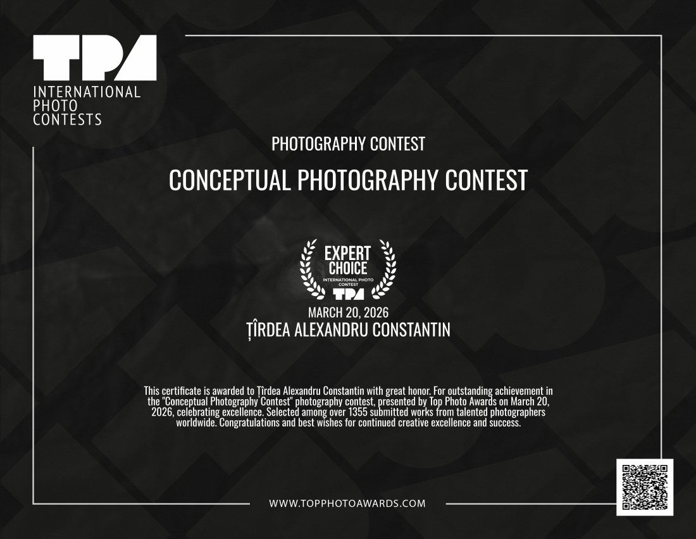
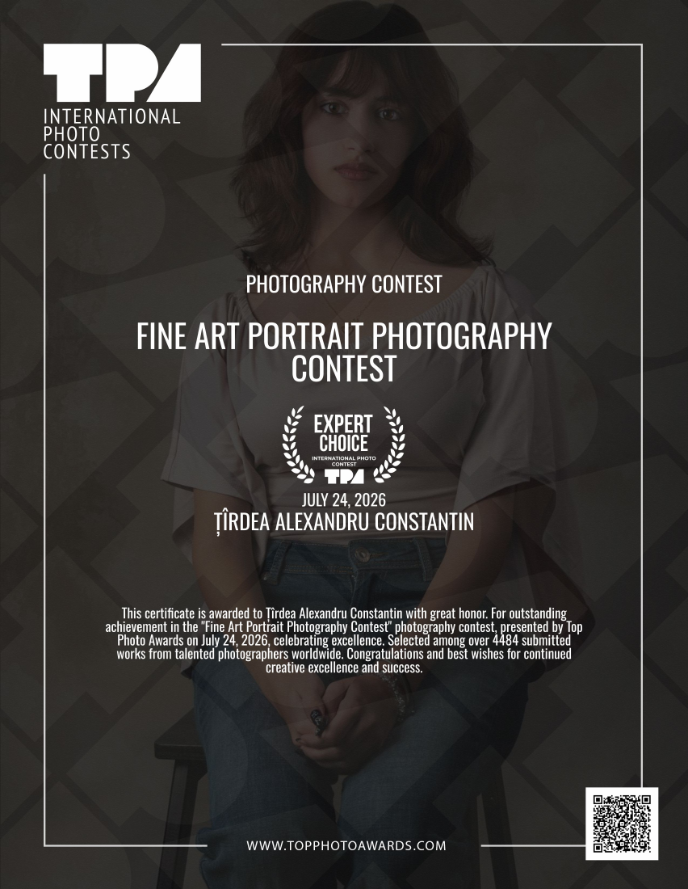
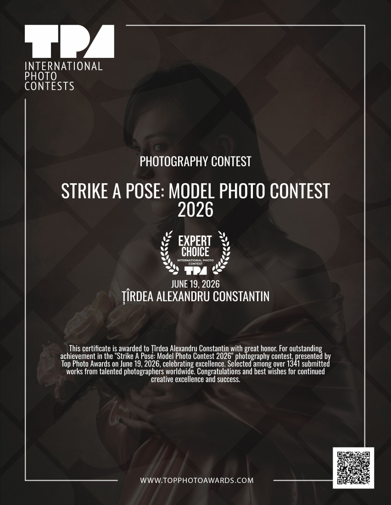
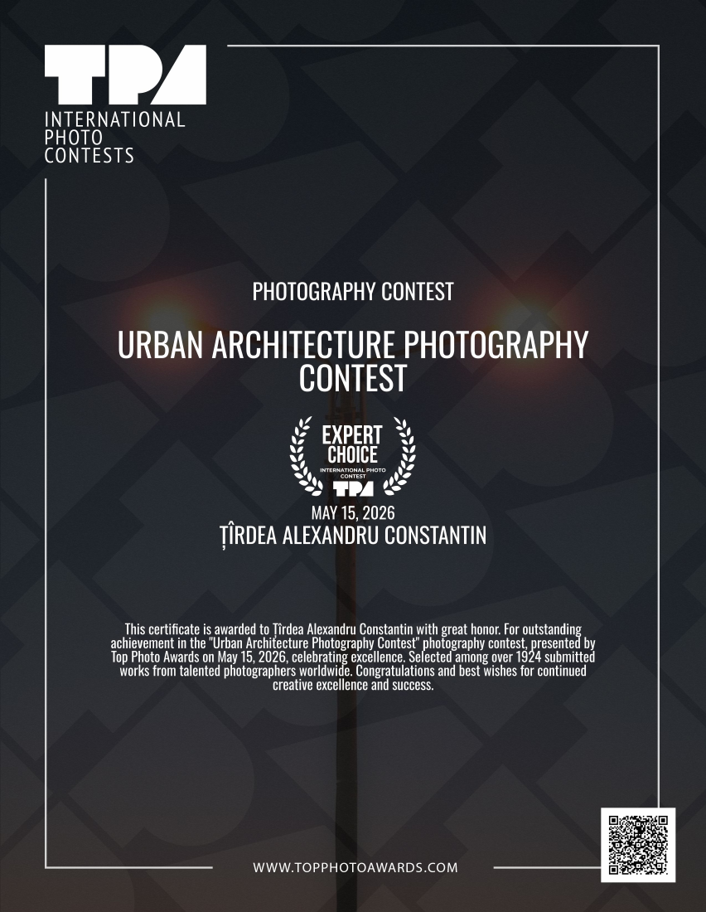
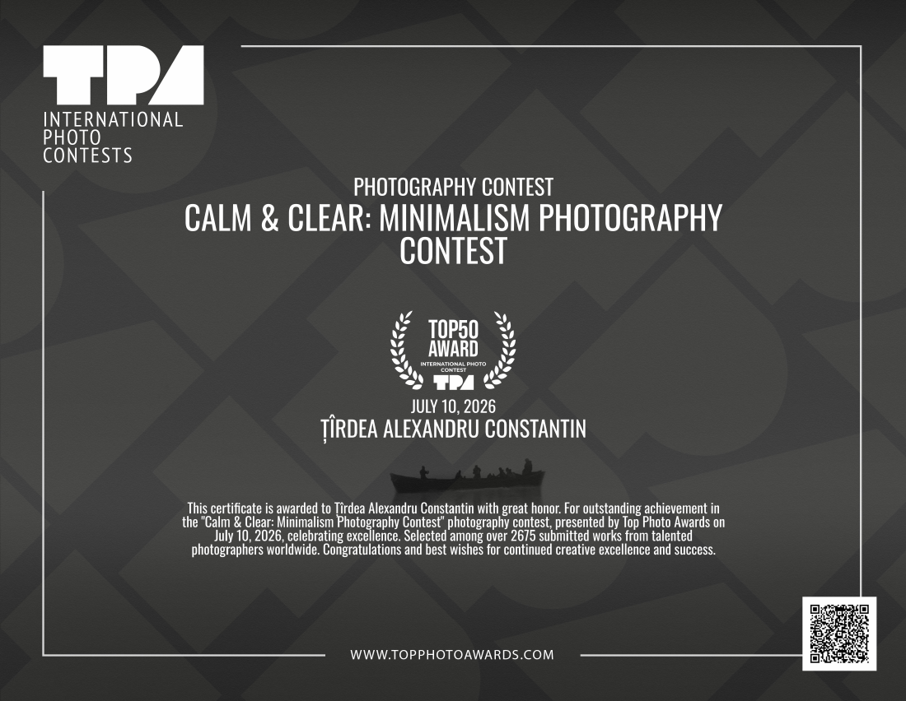

Awards
Selected prizes and recognitions.
International
2026

 Lady Tan’s Circle of Women Directed & editedWatch on YouTube ↗1st Prize · Pocket Trailer
Lady Tan’s Circle of Women Directed & editedWatch on YouTube ↗1st Prize · Pocket Trailer
TopPhotoAwards · 2026
Top 20

Expert Choice




Top 50

2025


National
2025
- 30th National Gheorghe Naum Graphics Competition — Photography1st Prize
- 26th Spring of the Arts Competition, Bacău1st Prize